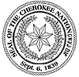

The story has been found at
http://www.cherokee.org
The English original is here.
Джон Г. Барнетт
Перевел с английского Юрий Шимановский.
Изгнание Чероки
Рассказ именинника, Джона Г. Барнетта, бывшего рядового 2-го полка,
2-й бригады горной пехоты армии США, принимавшего участие в кампании
под командованием капитана Абрама Мак-Клиллана по изгнанию индейцев племени
Чероки в 1838-1839 гг.
Дети мои! Сегодня мой день рожденья, 11 декабря 1890 года. Мне исполнилось
восемдесят лет. Родился я в Кингс Айрон Воркс, графство Салливан, Теннесси
11 декабря 1810 года. Я вырос и возмужал в диких лесах, где охотился
на оленя, кабана, волка или рыбачил в Бобровом Ручье. Бывало так, что
целые недели я проводил в глуши девственных лесов, не имея более никаких
товарищей кроме ружья, охотничьего ножа и маленького топорика, который
я носил на поясе.
Во время этих продолжительных охотничьих экспедиций я встречал много людей
из племени Чероки, с которыми подружился. Рука об руку я охотился с ними
днем, а ночью спал у огня их очагов. Я научился разговаривать на их языке,
узнал науку разгадывания следов, установки капканов и силков.
Один раз я нашел в лесу раненного мододого индейца, который был подстрелен
какими-то бродягами. Ему удалось убежать от погони и спрятаться в расщелине
скалы. Бедняга так ослабел от потери крови что не мог самостоятельно
передвигаться и уже умирал от жажды. Я перетащил его к ручью, перевязал
рану. Построил шалаш из веток и коры, которые в изобилии имелись на сухом
каштановом дереве поблизости. Долгое время я заботился об этом человеке,
кормил его каштанами и жаренной олениной.
Когда он поправился настолько, что смог ходить, я сопроводил его до
дома в индейской деревне и оставался там так долго, что меня успели
зачислить в пропавшие без вести. За это время я стал истинным виртуозом
в стрельбе из ружья и лука, искусным звероловом.
Изгнание Чероки с их земли застало меня в 1838 году рядовым срочной службы
американской армии, когда я был совсем еще молодым человеком. Будучи знаком
со многими индейцами и свободно говоря на из языке, я был направлен
переводчиком в Страну Дымящихся Гор в мае 1838, где стал свидетелем
одного из самых жутких событий в истории американских войн.
Беззащитных людей выволакивали из их домов и штыками загоняли на сборные
пункты. На моих глазах октябрьским утром, под ледяным дождем их как стадо
овец погрузили в шестьсот сорок пять фургонов и отправили на запад.
Никогда мне не забыть горе и ужас того утра. Вождь - христианин Джон
Росс прочел молитву, и когда по сигналу горна обоз тронулся, люди привстав
прощались со своими домами, зная что покидают их навсегда. Многие из этих
несчастных не имели ни одеял ни теплой одежды ни даже обуви на
ногах. Такими их выгнали из домов.
Семнадцатого ноября мы попали в бурю с градом и мокрым снегом при
минусовой температуре, и до самого окончания нашего путешествия в 26-го
марта 1839 г., условия существования индейцев были просто кошмарными.
Им приходилось спать в фургонах или прямо на земле без огня. Дорога
в изгнание стала для них дорогой смерти. Я помню, как только в одну
ночь двадцать два человека погибло от пневмонии, усталости, унижения.
Среди них была и жена вождя Росса, настоящая красавица. Эта благородная
женщина отдала свое единственное одеяло больному ребенку и осталась
под дождем на ледяном ветру безо всякой защиты. Через несколько
часов она умерла от воспаления легких.
Я совершил длинное путешествие вместе с чероки и сделал все, что может
сделать простой солдат, чтобы помочь им. Стоя на посту я неоднократно
оставался в одной рубашке, в надежде что мой плащ спасет жизнь кому-нибудь
из этих несчастных. Я стоял на посту и в ту ночь, когда умерла миссис
Росс. Сдав пост в полночь я не ушел спать, а оставался у фургона вождя.
На рассвете капитан Мак-Клиллан отправил меня помогать на ее (и не
только ее) похоронах. Тело погребли в неглубокой могиле и обоз двинулся
дальше.
Будучи молодым человеком, я, конечно, не избегал контактов с индейскими
девушками. Многие из них пели для меня свои горные песни. Немало из них в
свое время побывало и под моим одеялом. Но все было искренне. За время моего
близкого общения с народом Чероки, с октября 1829 и до марта 1839, я
не встретил ни одной проститутки.
Один раз у меня вышла стычка с сослуживцем, жестоким человеком по имени
Бен Мак-Донал. Случилось так, что прямо у меня на глазах он избил кнутом
дряхлого старика, загоняя его в фургон. Вид этого бедняги, почти
слепого, извивающегося под ударами хлыста, переполнил чашу моего терпения.
Я попытался остановить Мак-Донала, но это перешло в личную ссору и он
хлестнул меня прямо по лицу, глубоко располосовав щеку. И я не
сдержался. Маленький топорик по-прежнему висел у меня на поясе. Вскоре
Мак-Донала уволокли с места событий.
Я попал под арест. Но младший лейтенант Генри Буллок и рядовой
Илканайя Миллард, бывшие свидетелями драки рассказали капитану
Мак-Клиллану, как все случилось, и до суда дело не дошло. Много лет
спустя в Бристоле я повстречал лейтенанта Рили и младшего лейтенанта
Буллока. Тот шутя напомнил, что дело против меня так и не закончено и
поинтересовался, долго ли я намерен оттягивать судебное разбирательство.
Мак-Донал, насколько я знаю, выздоровел и еще в 1851 году работал
речным матросом где-то в Мемфисе, Теннесси.
Длинное, полное горя путешествие на Запад закончилось 26-го марта
1839 года, оставив на по пути четыре тысячи безымянных могил, вереница
которых протянулась от подножия Дымящихся Гор до так называемых западных
индейских территорий.
А причиной всех бедствий племени Чероки стала обычная человеческая
алчность. Начиная с Фердинанда Десото, совершившего в 1540 году потешествие
по индейским землям, стало доброй традицией искать золото в Стране Дымящихся
Гор. Надо прзнать, традиция эта имела объяснение. Еще в 1829 году,
в Ичате на рождественском карнавале я видел индеанок с украшениями,
похожими на золотые. В 1828 году индейский мальчик продал золотой
самородок белому торговцу. И этот кусочек металла стал приговором
всему народу Чероки. В короткое время страна была перевернута
кверху дном вооруженными отрядами, утверждавшими, что они -
правительственные чиновники, прибывшие позаботиться об индейцах.
Творимые ими злодейства просто растоптали всякое понятие о цивилизованных
людях. Землю забирали, дома жгли, а людей расстреливали.
Вождь Яналуска был лично знаком с президентом Эндрю Джексоном. Вместе
с отрядом из пятисот отборных воинов - чероки он помог Джексону
выиграть сражение у Лошадиной Подковы, потеряв тридцать три человека
убитыми. В тот день Яналуска самолично проломил череп воину из враждебного
племени Криков, когда тот совсем уже собирался убить будущего президента.
Вождь Росс послал Яналуску в Белый Дом просить защиты. Но Джексон был
безразличен и холоден к отважному сыну лесов, кто спас ему жизнь. Выслушав
просьбу он бросил: "Аудиенция закончена, сэр. Ничего не могу для вас сделать".
Судьба народа Чероки была решена. Вашингтон объявил, что индейцы должны
быть переселены на Запад, а их земли передаются белым. В мае 1838 года
четыре тысячи солдат и три тысячи добровольцев под командованием
генерала Винфилда Скотта вторглись в индейскую страну и вписали самую
черную страницу в американскую историю.
Мужчин, работающих в полях, арестовывали и гнали на сборные пункты.
Женщин выталкивали из домов. А они в большинстве даже не понимали
языка, на котором говорили солдаты. Детей отнимали у родителей и
собирали в отдельных загончиках, где земля вместо подушки, а небо вместо
одеяла. Стариков и немощных гнали штыками.
В одном доме случилось горе. Умер ребенок. Мертвый малыш лежал на
медведвежьих шкурах и женщины готовоили его к погребению. В этот момент всех
арестовали и выгнали на улицу. Я так и не знаю, кто похоронил тело.
В другом доме жила одинокая мать, вдова с тремя детьми. Один - совсем
еще младенец. Когда за ней пришли, она прочла молитву на своем языке,
попрощалась со старым верным псом, привязала младенца за спиной, двоих
других детей взяла за руки и отправилась в изгнание. Но испытание оказалось
не по силам. У нее случился сердечный приступ и она упала в реку вместе
с младенцем за спиной и двумя другими детишками, продолжавшими цепляться
за ее руки.
Этот случай произошел на глазах вождя Яналуски, спасшего жизнь президенту
Джексону. Слезы текли по его щекам, когда он обратил лицо к небу и промолвил:
"Господи, если бы в сражении у Лошадиной Подковы я знал то, что знаю
теперь, история Америки пошла бы другим путем."
Сегодня, в 1890-м году, эти события все еще слишком свежи и молодые люди
могли бы понять весь ужас злодеяния, совершенного против беззащитного
народа. Но факты уже надежно скрыты от молодежи. Современные школьники
даже не знают что живут на земле людей, штыками выгнанных на чужбину
для удовлетворения жажды золота.
Будущие поколения прочтут и заклемят позором это преступление. Но я
надеюсь, они не осудят простых солдат, вроде меня. У нас не было выбора,
как и у тех четырех чероки, которых генерал Скотт заставил убить одного
из вождей вместе с его детьми.
Спустя двадцать пять лет после описанных событий мне посчастливилось
встретить большую группу чероки в военной форме в составе армии южан
под командованием полковника Томаса. Они стояли в Золликоффере и я,
конечно, отправился проведать их. Большинство из них во время перселения
были еще детьми, но они тотчас же узнали во мне "доброго солдата".
Свободно разговаривая на их языке, я провел с ними незабываемый день.
Я узнал, что вождь Джон Росс до сих пор руководит своим племенем.
Как знать, быть может он жив и теперь. Это благородный человек, хлебнувший
немало горя. Eго арестовывали, бросали в грязную тюрьму, но сломить не
смогли.
Его жена пожертвовала собой, спасая больную девочку. Англо-саксы должны
бы воздвигнуть монумент во славу ее самопожертвования. Девочка тогда
поправилась, а сама миссис Росс спит в безымянной могиле за сотни миль от
родного дома.
Когда генерал Скотт оккупировал индейскую страну, многим чероки удалось
сбежать далеко горы и скрыться в пещерах. Избежав участи многих
других, они и по сей день там. Неоднократно я собирался посетить вновь
Страну Дымяшихся Гор чтобы разыскать их, но по разным причинам этот
замысел приходилось откладывать, а теперь я уже слишком дряхл для
такого путешествия. Годы летят стремительно, и старость незаметно одолела
меня.
Я могу поклясться, что ни ружье мое ни нож не пролили ни капли крови
народа Чероки. Я могу поклясться также, что сделал все, что мог сделать
простой солдат, когда они нуждались в помощи и защите. И спустя двадцать
пять лет я еще жил в их памяти как "добрый солдат".
Однако убийство есть убийство, независимо от того, совершается ли
оно бандитом под покровом ночи или людьми в униформе, марширующими под
музыку военного оркестра. Убийство есть убийство, и кто-то должен ответить.
Кто-то должен объяснить потоки крови, затопившие идндейскую страну летом
1838 года. Кто-то должен объяснить четыре тысячи могил, протянувшихся
вдоль тропы изгнания Чероки. Я хотел бы забыть, но до последнего
дня так и будут двигаться перед моими глазами те шестьсот сорок пять фургонов
с их кошмарным "грузом". Пусть историк будущего расскажет о слезах и ужасе
тех дней. И да воздаст Высший Судия каждому по делам его.
На этом, дети мои, я и заканчиваю свой рассказ, подготовленный ко дню
рождения. Сегодня 11-е декабря 1890 года.
* * *
От переводчика.
Этот рассказ трудно комментировать. Он, собственно, и не нуждается
в комментариях. Жаль, что Высший Судия так и не прочел воспоминаний
рядового Джона Барнетта, и подобным историям свойственно повторяться.
Дальнейшая же судьба героев этого рассказа сложилась так:
Верховный вождь Джон Росс в самом конце гражданской войны попал в плен
к северянам и умер в Филадельфии, в 1866 году. Это был необычайно
образованный, интеллигентный человек, мечтавший создать справедливое
и демократическое государство Чероки. В годы его правления, с 1828 г,
В Стране Дымящихся Гор издавалась газета "Феникс Чероки", которая имела
англоязычную версию и была известна даже в Европе.
В 1999 году на могиле Джона Росса была установлена бронзовая плита с
надписью "В память о тех, кто пережил изгнание".
Вождь Яналуска (правильное его имя Тсунулахунски) как и Росс похоронил
жену во время переселения. Сумел вернуться на родину и умер в 1868 году
в возрасте ста с лишним лет. В его честь названа горная вешина и озеро в
Северной Каролине.
Полковник Уильям Томас. Один из командиров армии южан. Верный друг
вождя Яналуски. После войны стал сенатором. На собственные деньги
он выкупил значительную часть индейских земель и, пользуясь правом
частной собственности, способствовал частичному переселению индейцев
обратно. Сами они не имели права возвращаться. А "западные индейские
территории" принадлежали индейцам до тех пор, пока там не нашли нефть.
Случилось это в начале двадцатого века. После этого земли были отобраны
и преобразованы в штат Оклахома.
Джон Барнетт, автор рассказа, скончался в возрасте восьмидесяти двух
лет 21-го января 1893 г.
Юрий Шимановский.
Назад|На главную